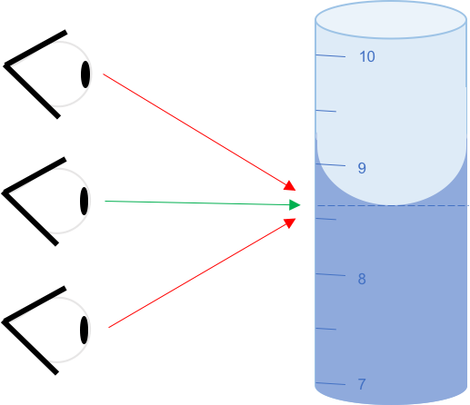
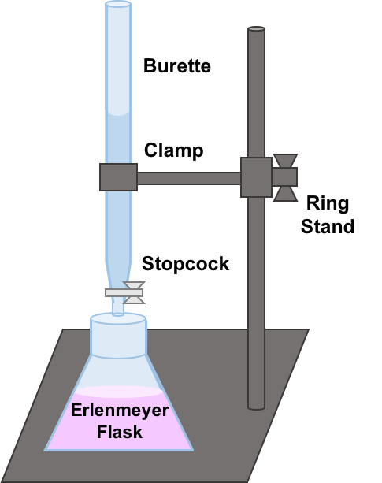

PROCEDURE
Step 1
Add about 50 mL of NaOH to the burette using the funnel. Make sure the stopcock is closed. Record the initial volume in the burette by the location of the meniscus like in the picture below.
Step 2
Measure out 100 mL of HCl in a volumetric flask. Transfer the HCl to an Erlenmeyer flask.
Step 3
Add 2-3 drops of Phenolphthalein to the Erlenmeyer flask.
Step 4
Arrange the burette and Erlenmeyer flask in the set up below.
Step 5
Open the stopcock and allow the NaOH to slowly enter the Erlenmeyer flask one drop at a time. Mix the solution between each drop of NaOH.
Step 6
Close the stopcock when the solution in the Erlenmeyer flask turns a faint pink color that does not disappear with mixing. Placing white paper under the Erlenmeyer flask may make the color easier to see. Record the final volume in the burette by the location of the meniscus.


Step 7
Repeat the titration two more times for a total of three trials recording the initial and final volumes in the burette for each trial.